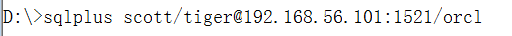

camtasia recorder
连接数据库: sqlplus scott/tiger@192.168.56.101:1521/orcl

一、数据库基本知识
1.系统全局数据库orcl
2.sysdba

3.远程登录虚拟机上的Oracle

4.

5.基本概念
5.1基于关系模型提出来的数据库为关系型数据库
5.2基于二维表而提出来的一个模型为关系模型
5.3数据库是物理概念，能在硬盘上找到
实例：是逻辑概念，是在内存中，通过实例来操作数据库。
关系可以使一对多：一个数据库对应多个实例，当多个实例对应一个数据库的时候为集群。
5.4集群

6.sql优化原则
7.sql 中的null
二、sql中select语句
spool录屏，屏幕上出现的所有操作
spool d:\....txtspool off
1. /的意思

2.修改拼错的sql语句 (也可以用ed)
2.1用c

2.2.用ed
2.3.用a

3.滤空函数nvl(Null Of Value)
nvl(a,b) : 当a为null时为b,a不为空时为a.
nvl2(a,b,c):当a不为null时为b，a为空时为c
select nvl2(comm,comm,0) from emp;
4.ed （edit）
ed在默认的记事本中打开上一条sql语句
5.

6.dual

7.连接符 ||

8.' ' 和 " "

9.sql/sqlplus语句

10.修改日期格式

11.赋值，等于

12.like中_有的时候需要转义

13.设置空值在最后（在Oracle认为null值最大）

三.函数
1.

2.group by

3.where和having的区别


4.Oracle中的if-then-else形式

5.行转列函数：wm_concat(varchar2)-->组函数

作业2：

四.多表查询
1.最少有n-1个条件（n为表的数量）
2.层次查询：本质上是单表查询，由于优化自查询问题。
层次查询：结果不直观，大数据效率会好
自查询：结果直观，大数据会产生笛卡尔积。

五、子查询
1.语法及注意的问题


2.在select之后的子查询只可以跟单行子查询。
3.单行、多行操作符
单行操作符

多行操作符


4.关于伪列rownum

行号为什么要按照默认的顺序生成呢？
临时表：手动创建 create global temporary table ****
特点，当事务或者会话结束的时候，临时表中的数据自动删除
order by 会由Oracle自动创建一个临时表。
在临时表中行号仍然是以前表生成时的行号。
Oracle，mysql都是基于行的数据库，取了第一行，才可以取第二行，所以rownum不能使用>和>=
练习一
5.相关子查询

六.练习
1.练习一


2.练习二


3.练习三

用子查询：

第二中方法：

第二种方法的分析：

6.集合查询

七.一天半的总结